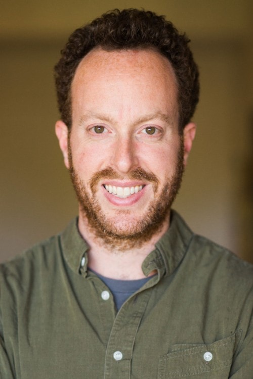

I lead small teams to make awesome web sites of all sizes, maintained by people of all skill levels, to be used by end users & devices of all sorts. I strive for the best in all of my work, and attempt to surround myself with others who are better/faster/stronger than I—both in the workplace and the community.
Highlights of my recent work include:
- Key Skills
-
- Drupal: Drush, custom module development, site building, multisite management, Feature-driven development & config management
- Drupal-adjacent technologies: Varnish, Memcache, MySQL, Solr, NewRelic
- Local development on the LAMP stack: Vagrant, Docksal, Lando, and other virtual environments
- Managed Drupal hosting: Acquia, Pantheon, Platform.sh, Amazee.io
- Project management: JIRA, Confluence, Trello
- Making code: VSCode, Sublime Text, Atom, PHPStorm
- Code repositories: GitHub, & Bitbucket
- Experience
-
American Hospital Association
Drupal Developer (contract)—July 2019 to present
- Implemented continuous documentation practices to support onboarding, deployment, development, and project management.
- Standardized local development environments to support developers on Windows 10 machines using a combination of VirtualBox and Lando.
- Streamlined project management practices, including: separate backlog grooming and sprint planning sessions, connecting JIRA and Bitbucket to enable better status reporting, creating PR and ticket templates to enable more consistent descriptions and testing.
Kanopi Studios
Drupal Technical Lead—January 2019 to March 2019
- Delivered frond-end and back-end work for a global law firm redesign in Drupal 7 utilizing Drupal Paragraphs module, Bootstrap theme, and custom code.
- Assess and deliver language and accessibility fixes for a Drupal 8 multilingual site for use in RTL languages and by blind content authors.
- Collaborate on process improvement through discussion, documentation, and standards-building.
- Contribute to dev-ops resources including a starter theme and Docksal configuration.
Palantir.net
Senior Engineer & Project Lead—January 2018 to December 2018
Senior Engineer—July 2016 to January 2018
- Lead a team of 3-6 in supporting and enhancing properties for the American Medical Association, including personalization via Acquia Lift, retroactive style-guide development with Pattern Lab, and Drupal 8 site-building utilizing Layout Builder. (Case Study)
- Architect and lead team of 1-2 in building a reusable search application for the University of Michigan Health System, utilizing React, Apache Solr, and Drupal custom code.
- Lead team of 4 in building a marketing and course search site for Northcentral Technical College, including significant D8 migration development and a integrated style guide leveraging Emulsify.
University of Chicago: Web Services
Senior Front-End Developer—May 2015 to June 2016
- Manage UChicago Sites templated website service for 300+ sites across campus and the Medical Center. Regularly run maintenance updates in conjunction with Acquia Remote Administration process, develop and deploy new features, manage support queue, and conduct client trainings.
- Lead rebuild of news.uchicago.edu—(2016) With one other Front-End Dev and one Programmer, rebuilt major D6 property in Drupal 7. Restructured technical project management processes to facilitate multi-developer project using Trello and add-ons. Developed Features-driven development workflow utilizing pull requests and cross-developer QA. Engaged client in Agile-like process, continually iterating on changes throughout the development process. Ensured quality across >30,000 migrated content items. Set aggressive caching with Varnish and Expire/Acquia Purge modules and load tested against performance benchmarks with Blazemeter. Maintained developer morale despite aggressive demands from client and management. (Case Study on Drupal.org)
University of Chicago: College IT
Web Project Manager—July 2012 to May 2015
Web Project Coordinator/College Support Specialist—July 2007 to July 2012
- Plan, design, implement, maintain, and redesign web properties for College departments using web standards, responsive design, and accessible technologies.
- college.uchicago.edu—(2009) Created content strategy to transition from static HTML to content-managed platform, built Drupal 6 site to integrate with contractor-developed Zen subtheme, hand-migrated content via Jumpchart. (2014) Managed full-time developer/designer to develop new responsive Omega-based theme using SASS/Compass, conducted student and staff interviews to better understand user base, built D7 site heavily leveraging Views and Context modules, migrated 500+ nodes with Migrate, Feeds.
- filmstudiescenter.uchicago.edu—(2009) Developed custom Zen subtheme based on contractor-developed Photoshop designs, built D6 site to manage 20+ yr event archive, integrated FileMaker film db with Drupal. (2013) Managed developer to transition site to mobile-first, Omega-based D7 theme.
- study-abroad.uchicago.edu—(2010) Independently built Zen-based theme, custom module, and D6 site to transition heavily structured data from HTML site. (2014) Migrated to D7, relying heavily on Migrate and Feeds modules.
- Maintain dev/prod Drupal 7 multisite environment with 15+ sites for 2+ developers.
- Develop content strategies, train and assist content managers for over 30 web sites and associated social media outlets.
- Create, maintain, and disseminate identity guidelines and logos for The College.
- Manage one FTE and 1-2 student workers to assist with above tasks.
- Manage 3-5 student Media Editors to plan and deliver original content for web and social media through weekly meetings and one-on-one work.
- Serve as primary desktop support for College Advisors, Deans, and faculty.
University of Chicago: College Housing
Resident Head, Vincent House—September 2007 to June 2011
Served as informal counselors and advisors to 45 students. Developed a variety of intellectual and social activities to create strong communities in our house and hall.
International House at the University of Chicago
Senior Coordinator of Technology—July 2005 to July 2007
- Redesigned web site to provide in-depth content through weekly updates including calendars, newsletters, and event listings (ihouse.uchicago.edu).
- Maintained and updated computer labs and printers for use by 200-500 residents.
Istria Café
Barista—July 2005 to April 2006
Created hand-crafted espresso drinks, coffee, gelati, and sandwiches while providing excellent customer service in an independent coffee house environment.
United States Peace Corps, Tanzania
Volunteer, Secondary School Education Project—Sept 2003 to Jan 2005
- Participated in three months of intensive language, cultural, and technical training designed to assist with cultural integration.
- Taught basic computer literacy and theory to 200 middle school students with 12 hr/week of instruction, assisting over 100 to become the first students in the school to achieve competence in the national Computer Studies syllabus.
- Developed and led seminars to educate 20 teachers in 2-week, 40-hour courses on the advantages and use of computer resources in the classroom.
- Speaking Experience
-
-
- MidCamp (Midwest Regional Drupal Camp)—founding co-organizer, party planner, sponsor chair, doer of things (2014-present)
- Chicago Drupal Meetup Group—co-organizer
- DrupalCon—volunteer, BoF organizer
- Drupal@UChicago, UChicago Web Community—co-founder
- 62nd & Dorchester Community Garden—co-founder, committee member (2010-14)
- Delta Upsilon Chicago Alumni Association—President (2011-2015)
- UchiNOMgo—founder (2011-present)
- Education & Certifications
-
Acquia Drupal Certified—Drupal 8 Developer (April 2019)
University of Chicago Graham School—Negotiation and Dispute Resolution, 2012; Mapping Processes, 2010
University of Chicago—S.B. Computer Science, 2003
- Of Note
-
- References
- Available on request
"One Page Résumé" originally by Chris Coyier for CSS Tricks, modified and made responsive by yours truly.